ENSENADA
Tiene algo que solo tiene Ensenada.
Mirar, registrar y contar Ensenada
Una marca para mostrar la ciudad desde adentro.
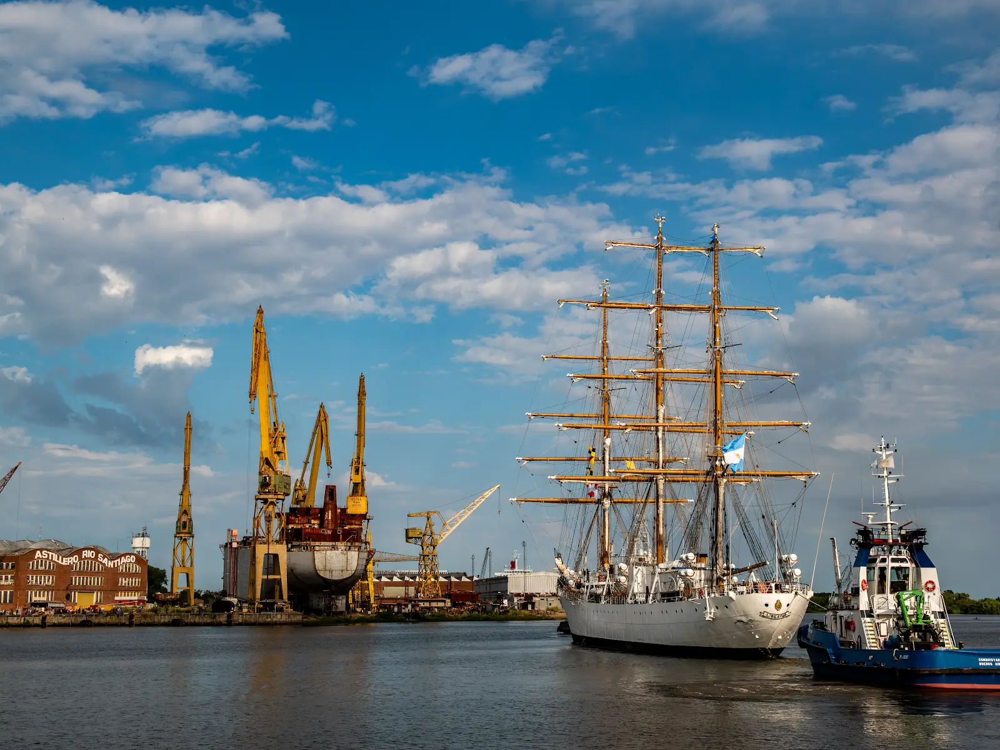
Fragata ARA Libertad en Ensenada
Un encuentro entre patria, río e industria naval. La Fragata ARA Libertad es mucho más que una embarcación: es uno de los grandes símbolos de la Argentina en el mundo. En Ensenada, su presencia une soberanía, formación, trabajo portuario y orgullo nacional.
Este carrete reúne imágenes elegidas para sentir su llegada: la bandera flameando, la silueta sobre el río, los remolcadores acompañando y el paisaje industrial que cuenta una parte profunda de nuestra identidad.
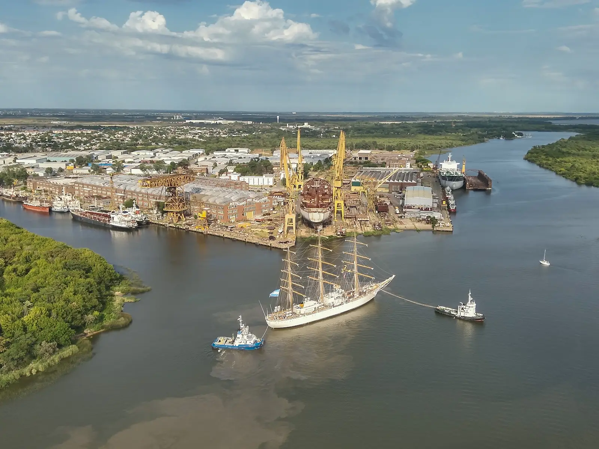
02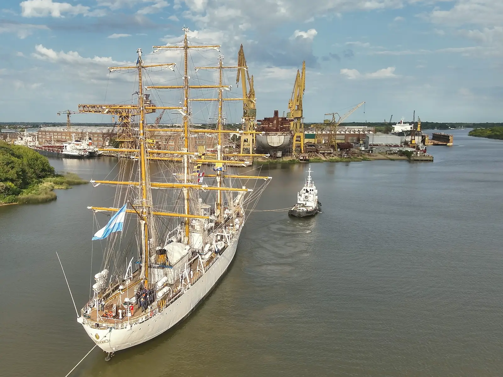
03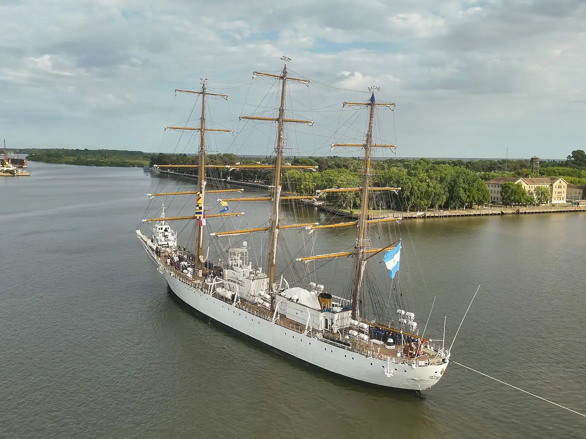
04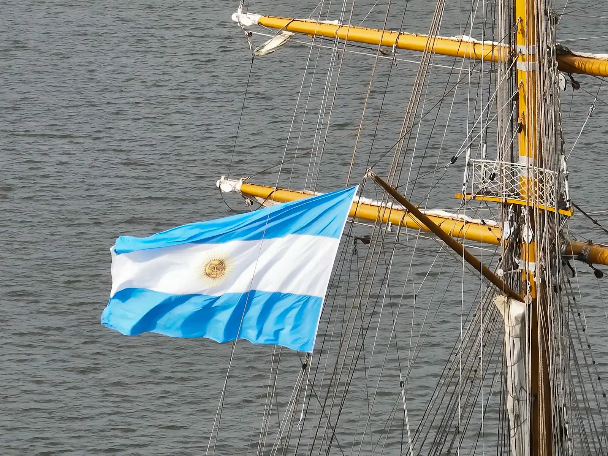
05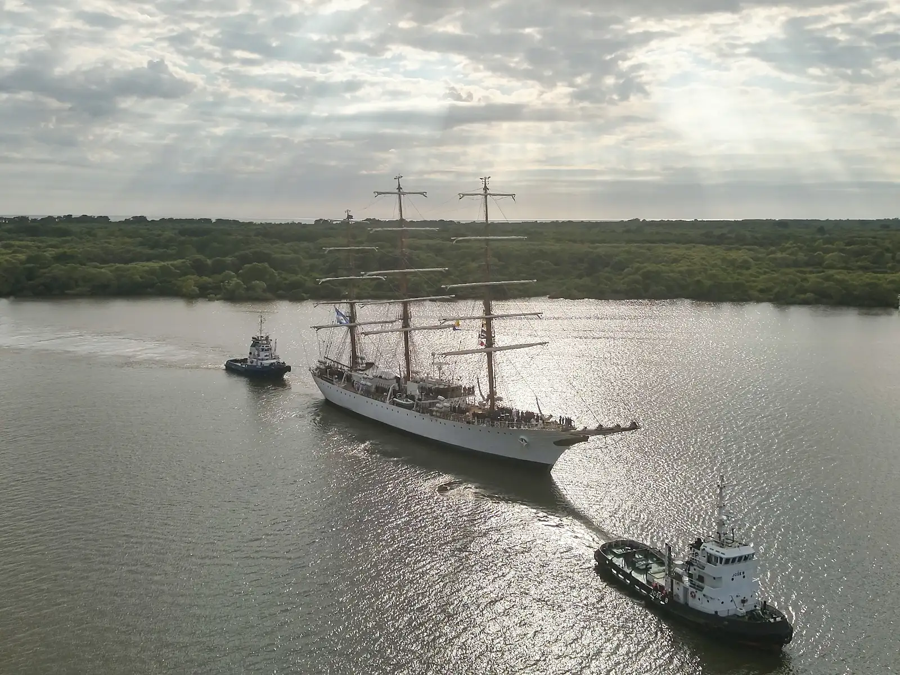
06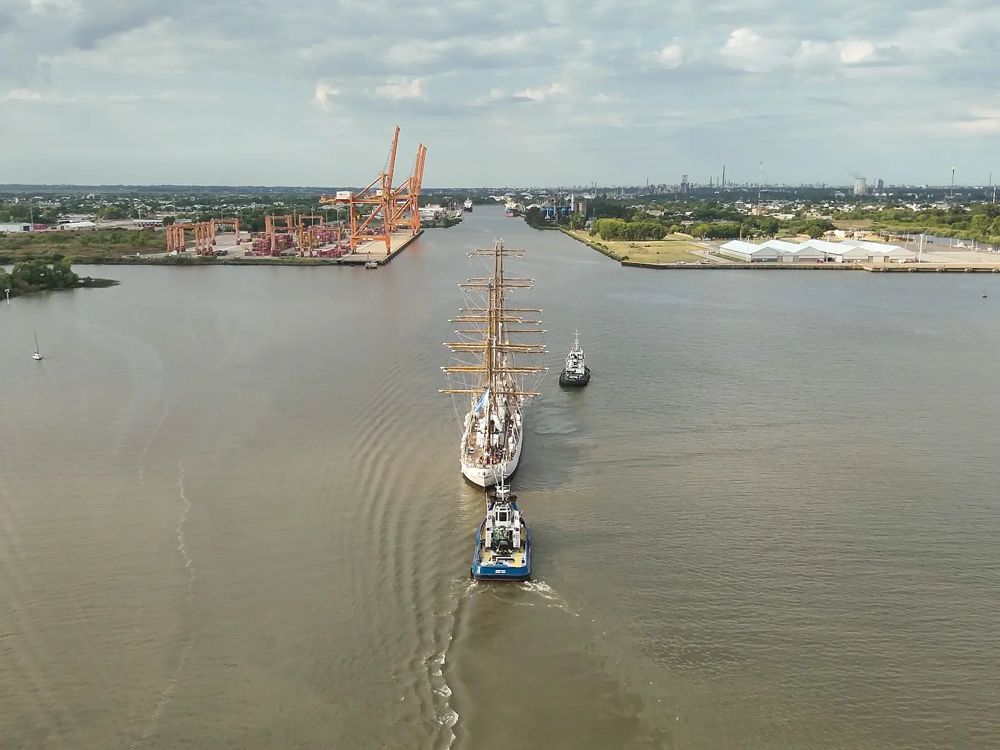
07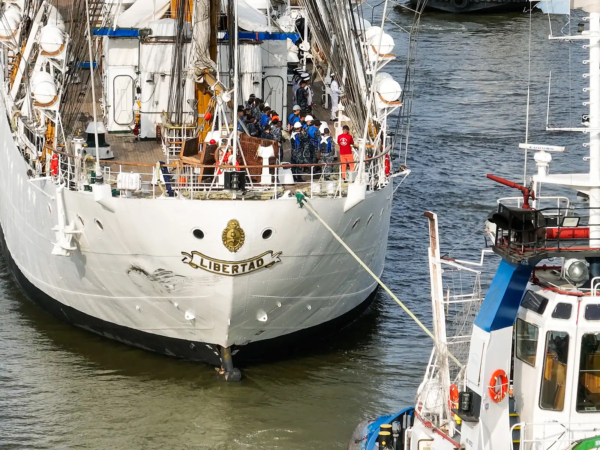
08ENSENADA IDENTIDAD
Tres formas de vivir Ensenada
ENSENADA CULTURA
Cultura, música y encuentros
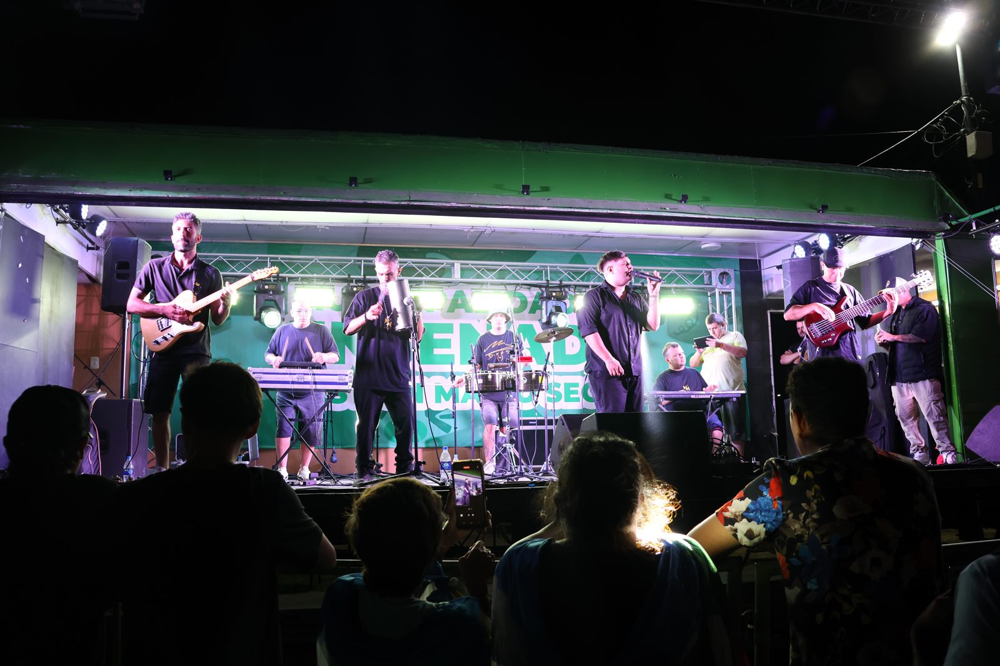
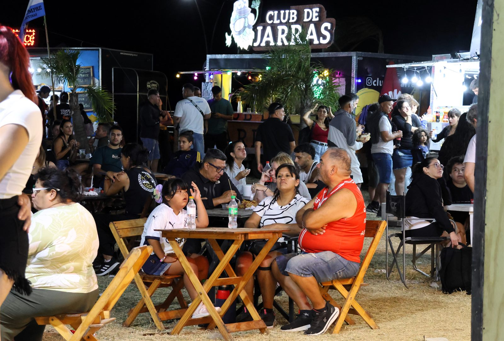
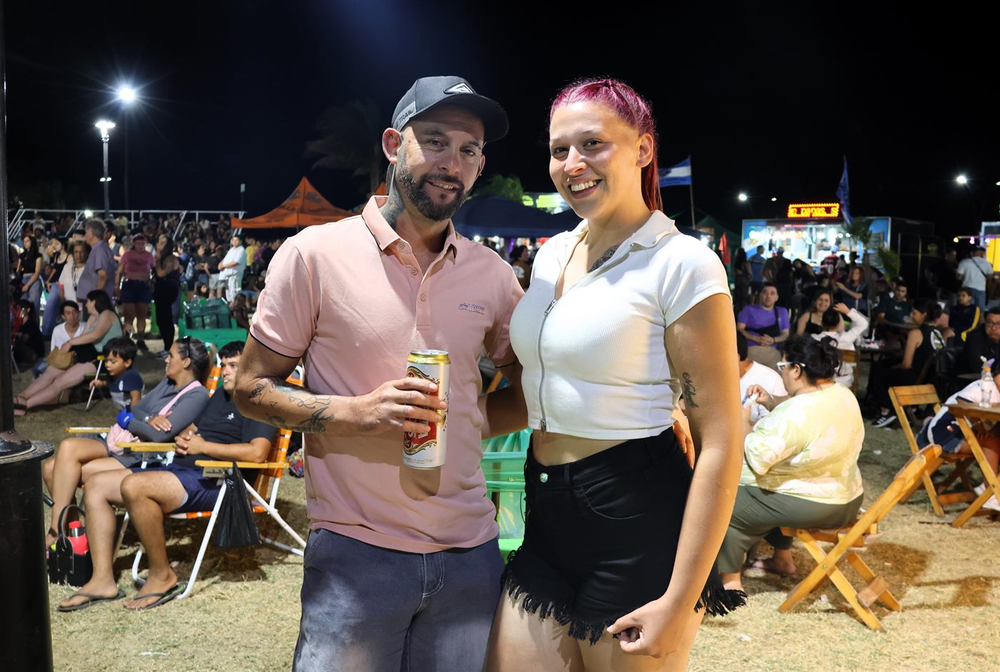
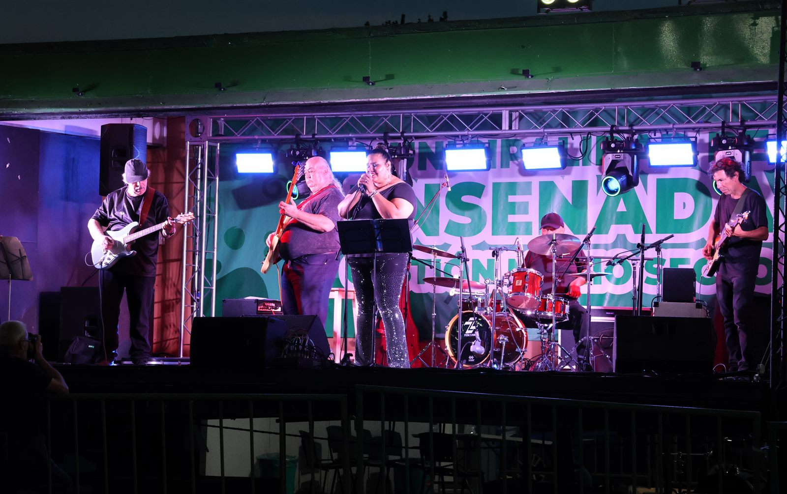
ENSENADA HISTORIA
Fuerte Barragán
La Ensenada de Barragán fue puerto natural y punto estratégico en la historia del Río de la Plata. El fuerte conserva una huella central de esa identidad.